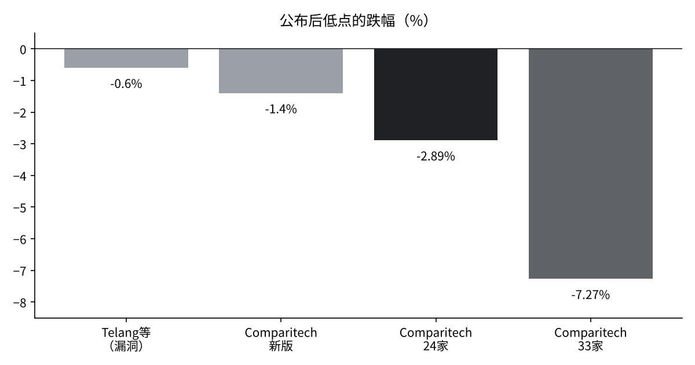
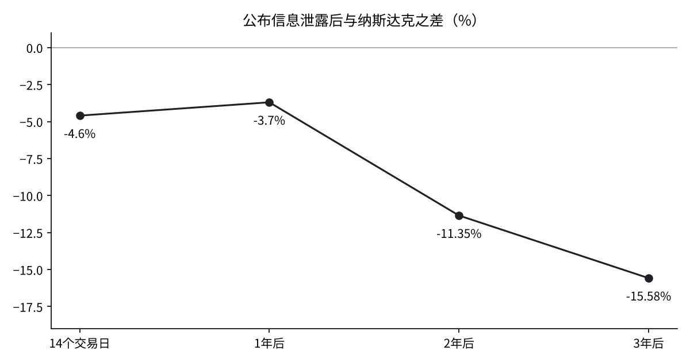

京成337万条与KADOKAWA勒索软件――公布遭受非法入侵的公司，股价会下跌百分之几、多少天后回升
11月11日深夜，日本京成Skyliner的预约系统遭到非法入侵，最多约337万条个人信息可能已经泄露。
在日本，账户被盗、勒索软件导致停运、客户信息外泄等非法入侵的公布，已不再罕见。
本文的问题是：上市公司公布遭受非法入侵后，股价会下跌百分之几、多少天后回升，以及攻击类型不同，结果是否不同。

- 公布信息泄露后，股价平均下跌几个百分点，低点出现在公布后两周左右。在对24家美国上市公司的分析中，14个交易日后下跌2.89%。
- 短期跌幅多在一到两个月内收复，但与指数的差距会持续存在，有研究显示三年后比纳斯达克低15.58%。
- 导致业务停止的勒索软件，会先体现在营收和利润上，而不是股价上。KADOKAWA的损失以营收减少和特别损失的形式留在了利润表上。
问题与背景
非法入侵，是指未经许可进入他人的系统。本文将其分为三类。第一类是信息泄露（客户的姓名和联系方式外流），第二类是系统停运（勒索软件加密数据，导致业务停止），第三类是账户被盗（用户的账户被擅自使用）。
勒索软件，是指加密数据使其无法使用，并以恢复为条件索要钱财的攻击。累计异常收益，是指把无法用整体市场走势解释的股价变化，按若干天累加后的数值。
股价下跌的原因可以想到三个：赔偿和恢复的费用、客户流失、监管机构的罚款。哪项费用最大，取决于攻击的类型。
数据与方法
本文并非重新收集股价进行计算的研究，而是把已公开的学术研究与调查、企业披露和官方统计中的数字，按类型重新排列比较。
第一类使用Acquisti等人的研究（美国上市公司的79起信息泄露）和Comparitech的分析（以纽约证券交易所为主的24家公司）。后者以公布前一天的股价为基准，用同期纳斯达克指数的差距来评估。
第二类使用KADOKAWA截至2025年3月财年的披露，以及趋势科技整理的日本国内特别损失案例。第三类使用日本金融厅公布的2025年证券账户非法入侵统计。
关于攻击类型的差异，参考了以回归分析事件性质与股价反应关系的既有研究综述。
比较的指标限定为三个：到达低点的天数、低点时的跌幅（含与指数的差距）、回到公布前水平所需的天数。第二类和第三类关于股价的研究较少，因此改用营收、特别损失和损失规模来观察。


结果
第一类信息泄露在公布当天出现统计上显著的下跌。Acquisti等人报告称，这一效应在次日扩大，之后缩小并失去显著性。
Comparitech的24家公司中，低点出现在公布后14个交易日，股价平均下跌2.89%，比纳斯达克低4.6%。约一个月后，与纳斯达克的差距缩小。
同一调查的另一个版本中，33家公司的低点同样在14个交易日后，平均跌幅较大，为7.27%。更新的版本中，低点出现在公布后41天，跌幅为1.4%，平均53天回到公布前的水平。各版本数字差异很大，但“两周到一个半月见底、一到两个月回升”的形态是共同的。
行业之间也有差异。在Comparitech的分析中，公布后立即下跌幅度最大的是金融业，科技公司的下跌持续更久，在第40个交易日以比纳斯达克低5.3%见底。较新的版本中，医疗公司跌幅最大，其次是金融和制造业。
不过从较长的期间来看，差距依然存在。一年后比纳斯达克低3.7%，两年后低11.35%，三年后低15.58%。
| 期间 | 股价平均 | 与纳斯达克之差 |
|---|---|---|
| 14个交易日后（低点） | −2.89% | −4.6% |
| 1年后 | +8.53% | −3.7% |
| 2年后 | +17.78% | −11.35% |
| 3年后 | +28.71% | −15.58% |
第二类系统停运，会先体现在损益上，而不是股价上。KADOKAWA在2024年6月遭受勒索软件攻击后，视频平台等服务停运约两个月，网络业务营收比上年减少约39亿日元（约1.64亿元人民币（约2,441万美元）），出版业务减少约36亿日元（约1.51亿元人民币（约2,253万美元））。截至2025年3月的财年，预计特别损失24亿日元（约1.01亿元人民币（约1,502万美元））。约25万人的个人信息泄露也得到确认，第一类与第二类同时发生。
零售企业泉（Izumi）计入特别损失10亿日元（约4,205万元人民币（约626万美元）），其后半年的净利润同比减少22%。这是损失没有止于一次性费用、而是波及客流的案例。物流企业关通也计入了约9.9亿日元（约4,163万元人民币（约620万美元））的攻击相关损失。
第二类的费用不只是赎金。Sophos 2024年的调查显示，支付赎金的组织平均支付200万美元，赎金以外的平均恢复费用为273万美元。据日本警察厅统计，2024年上半年勒索软件受害报告为114件。
第三类账户被盗，受害的是用户而不是企业。据金融厅统计，2025年1至6月非法入侵12,758件，非法交易7,139件，交易金额约5,710亿日元（约240.1亿元人民币（约35.73亿美元））。按月看，3月起急剧增加，4月的非法交易最多，为2,932件。多数手法是通过假网站盗取登录信息，卖出受害者持有的股票，再买入小盘股。
关于第三类，尚未找到比较损失如何体现在证券公司股价上的研究。因为由谁承担赔偿，会大大改变公司的负担。

敏感性分析
利用上述数字，按三种前提估算了一家市值1,000亿日元（约42.05亿元人民币（约6.26亿美元））的公司公布信息泄露后，在低点时市值的减少。跌幅分别设为Telang等人研究的0.6%、Comparitech 24家公司的2.89%、33家公司版本的7.27%。
| 前提 | 低点跌幅 | 市值减少 | 回升所需时间 |
|---|---|---|---|
| 小（−0.6%） | −0.6% | 6亿日元（约2,523万元人民币（约375万美元）） | 数天 |
| 中（−2.89%） | −2.89% | 28.9亿日元（约1.22亿元人民币（约1,809万美元）） | 约一个月 |
| 大（−7.27%） | −7.27% | 72.7亿日元（约3.06亿元人民币（约4,550万美元）） | 一到两个月 |
前提跌幅每变动1个百分点，减少额变动10亿日元（约4,205万元人民币（约626万美元））。无论哪种前提，数额都与KADOKAWA营收减少（几十亿日元）处于同一量级。短期股价下跌与利润表上的损失，在规模上可以相提并论。
讨论
也有相反的观点。Kannan等人的研究在安全事件公布后没有发现显著的下跌。在Comparitech分析的另一个版本中，泄露规模较大的公司在六个月后反而跑赢了市场。
公司规模也有影响。既有研究综述中，有多项结果显示公司越小跌幅越大。泄露信息的敏感程度（如医疗或金融信息）和条数，也被列为加大跌幅的因素。在Acquisti等人的研究中，受影响人数超过10万的事件，效应才变得显著。
公布的方式也有影响。综述显示，及早通知客户和社会的公司，累计异常收益显著为正；而披露事件细节较多的公司则为负。及早通知与写到什么程度，被视为两个不同的判断。
关于软件漏洞的公布，Telang等人报告平均损失市值的0.6%，而发布修补程序的公司反应为正。展示修复手段，缓和了下跌。
本文有三个局限。第一，手头没有用同样方法收集的、关于日本上市公司的近期研究。第二，Comparitech的分析不是学术论文，公司数也只有24至34家。第三，长期的差距中混入了泄露以外的因素。
检验答案的标准是：对日本上市公司中按公布日和行业匹配的20个以上案例，测量14个交易日和一年时与TOPIX的差距。若结果落在−2%到−5%之间，本文的结论在日本也同样成立。
结论
公布信息泄露后，股价在两周左右见底，下跌几个百分点。短期跌幅多在一到两个月内收复，但也有长期与市场的差距持续存在的案例。
导致业务停止的类型，损失会先体现在营收和特别损失上，而不是股价上。从投资者的角度看，与其看公布当天的跌幅，不如看之后财报的数字，更容易把握损失的大小。第三类账户被盗，对公司的影响会因赔偿负担的分配方式而大不相同。
我是这样看的
我在日本。我的餐厅用纸质方式接受预约，共享办公室的会员信息也不保存在自家的系统里。不持有信息，第一类损失就不容易发生。
即使我持有的股票公布遭受非法入侵，我也不会只因为股价下跌就卖出。我看的是之后的财报里，营收和利润缺了多少。
我在野村证券的股票下单只通过电话口头进行。银行和证券都放在大型机构，能开启的双重认证全部开启。我认为，与其增加工具，不如先决定把东西放在哪里、按什么顺序处理，效果更好。
来源
- Alessandro Acquisti, Allan Friedman, Rahul Telang「Is There a Cost to Privacy Breaches? An Event Study」ICIS 2006 Proceedings（2006年） https://aisel.aisnet.org/icis2006/94
- Comparitech（Paul Bischoff）「How data breaches affect stock market share prices」 https://comparitech.com/blog/data-breach-share-price-analysis
- Credit Union Times「Breaches Affect Short-Term Share Prices; Long Term, Not So Much」2018年9月10日（Comparitech 2018年版数据） https://cutimes.com/2018/09/10/breaches-affect-short-term-share-prices-long-term
- Threatpost「Data Breaches Batter Stock Prices at Public Companies, For Months」（33家公司版本的数据） https://threatpost.com/data-breaches-batter-stock-price/150088
- 既有研究综述（Telang and Wattal 2007、Cavusoglu et al. 2004、Gordon 2011等）HICSS论文 https://core.ac.uk/download/301371443.pdf
- 包含Kannan, Rees, Sridhar（2007）的综述：The Impact of Federal and State Notification Laws on Security Breach Announcements（2014年） https://core.ac.uk/download/301376992.pdf
- 勒索软件对KADOKAWA业绩的影响（截至2025年3月财年） https://rocket-boys.co.jp/?p=16956
- 趋势科技：勒索软件攻击造成的特别损失，2024年8月16日（2024年10月28日补充） https://trendmicro.com/ja_jp/jp-security/24/h/breaking-securitynews-20240816-02.html
- 金融厅公布的证券账户非法入侵（2025年1至6月） https://rocket-boys.co.jp/?p=19693
- Sophos「勒索软件现状2024」的数据（Business Journal引用） https://biz-journal.jp/ai/pickup-news/post_337273.html
- 日本警察厅2024年上半年勒索软件受害报告件数（宣传会议引用） https://www.advertimes.com/?p=482233
- News On Japan（TBS）「Keisei Skyliner Reservation System Hacked」2026年11月16日 https://newsonjapan.com/article/151383.php
图表与插图由YUKI CAPITAL制作
我每天在X上记录数字与判断。